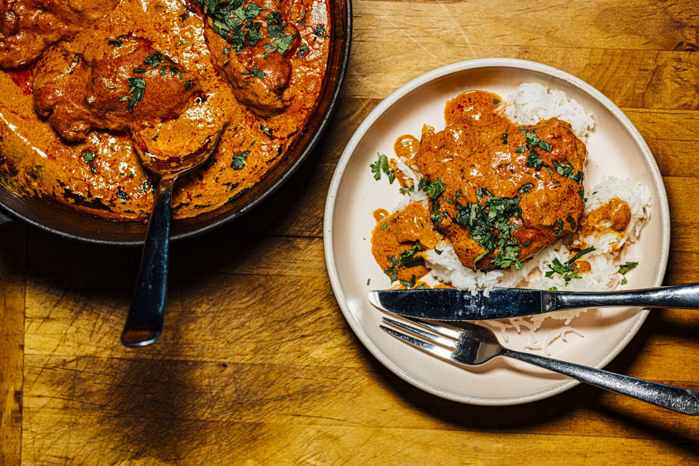

Butter chicken recipe

This butter chicken recipe, or chicken makhani, is one of my favorite Indian dishes. It features a full-flavored sauce that complements the chicken well. It can be made as mild or spicy as you wi
sh by adjusting the cayenne.
Serve with basmati rice and naan bread.
Ingredients used in this dish
- 2 tablespoons peanut oil, divided
- 1 shallot, finely chopped
- ¼ white onion, chopped
- 2 tablespoons butter
- 1 tablespoon ginger garlic paste
- 2 teaspoons lemon juice
- 2 teaspoons garam masala, divided
- 1 teaspoon chili powder
- 1 teaspoon ground cumin
- 1 bay leaf
- 1 cup tomato puree
- 1 cup half-and-half
- ¼ cup plain yogurt
- 1 pinch salt and ground black pepper to taste
- 1 pound boneless, skinless chicken thighs, cut into bite-size pieces
- ¼ teaspoon cayenne pepper, or to taste
- 1 tablespoon cornstarch
- ¼ cup water
steps to make it
- Marinate the Chicken: Combine 500g boneless chicken pieces with 1/2 cup yogurt, 1 tablespoon ginger-garlic paste, 1 tablespoon lemon juice, 1 teaspoon red chili powder, 1/2 teaspoon turmeric, and 1 teaspoon garam masala. Marinate for at least 1 hour or overnight for best results.
- Cook the Chicken: Heat 2 tablespoons oil in a pan. Cook the marinated chicken until golden brown and cooked through. Set aside.
- Prepare the Gravy: In the same pan, add 2 tablespoons butter. Once melted, add 1 finely chopped onion and sauté until golden brown.
- Make the Tomato Base: Add 2 chopped tomatoes, 1 tablespoon ginger-garlic paste, 1 teaspoon garam masala, 1 teaspoon ground coriander, 1 teaspoon ground cumin, and 1 teaspoon red chili powder. Cook until the tomatoes break down and the oil separates from the mixture.
- Blend the Tomato Mixture: Puree the cooked tomato mixture using an immersion blender or regular blender. Return the blended sauce to the pan.
- Add Cream: Stir in 1/2 cup heavy cream and 1/4 cup water to the sauce. Simmer for 5-10 minutes to allow the flavors to meld.
- Combine Chicken with Gravy: Add the cooked chicken to the sauce. Stir gently to coat the chicken with the gravy and cook for another 5 minutes.
- Finish the Dish: Add 1 tablespoon butter and a pinch of garam masala. Stir and simmer for 2-3 minutes.
- Garnish and Serve: Garnish with fresh cilantro leaves. Serve the butter chicken hot with naan or rice.